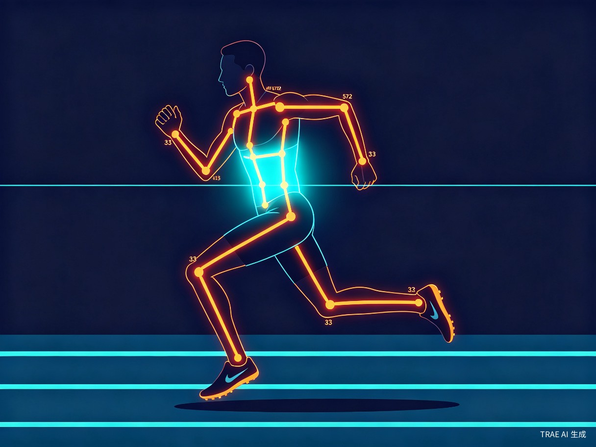
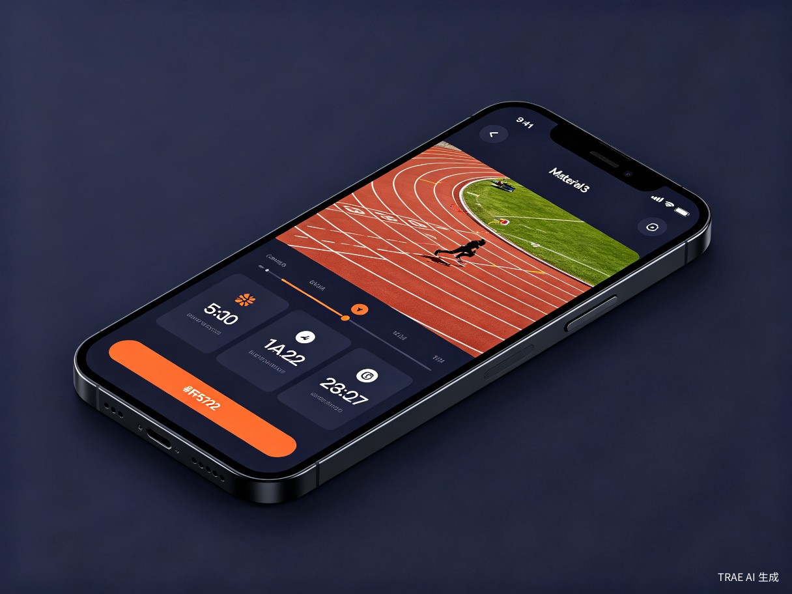
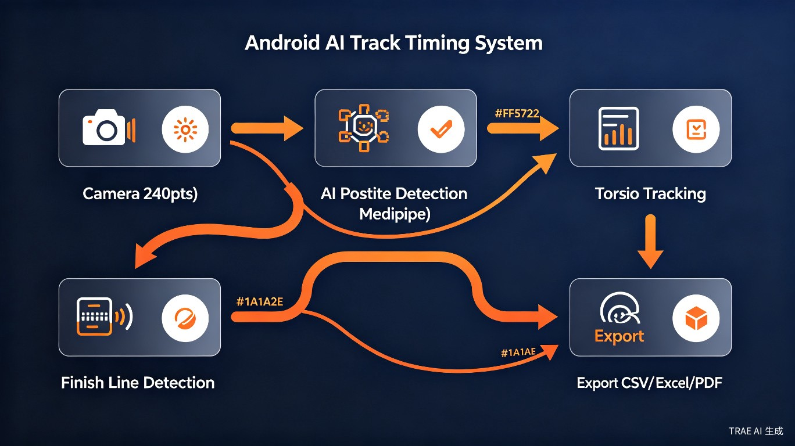

让每场田径比赛都有专业电计
SensRun 是一款基于 Android + AI 姿态检测 的田径电子计时系统。它利用手机摄像头以 240fps 高帧率录制比赛视频，通过 MediaPipe Pose Landmarker 实时检测运动员的 33 个人体关键点，基于躯干（肩膀+髋部）穿越终点线 来判定成绩，严格遵循国际田联规则。
传统田径比赛的人工计时误差可达 0.1-0.2 秒，而专业电计设备价格昂贵（数万至数十万元），基层学校和业余赛事难以负担。SensRun 的目标就是用一部 Android 手机，实现接近专业电计的计时精度，让田径计时民主化。
产品形态
Android 原生 App，支持手机和平板，横屏优先设计，适配户外强光环境
核心技术
MediaPipe AI 姿态检测 + CameraX 240fps 高帧率录制 + 子帧级冲线时间插值
输出成果
自动排名成绩单，支持 CSV / Excel / PDF 多格式导出，含冲线视频证据
谁最需要 SensRun？
SensRun 面向的核心用户是 基层田径赛事组织者，包括中小学体育教师、青少年体校教练、企业运动会组织者、以及社区田径爱好者。他们面临的共同困境是：需要精准计时，但买不起专业设备。
-
1人工计时误差大 人工按秒表的反应时间约 0.15-0.2 秒，百米比赛中 0.1 秒的差距就是名次之差。学生运动会因计时争议引发的投诉屡见不鲜。
-
2专业设备价格高昂 一套专业田径电计系统价格在数万至数十万元，仅省级以上赛事和大型运动会才能配备，基层赛事完全无法负担。
-
3缺乏视频回放证据 人工计时无法提供冲线瞬间的视频证据，成绩争议时无据可查。SensRun 自动保存冲线前后 3 秒视频，支持帧级回放。
-
4成绩整理效率低 传统方式需要人工记录、核对、排名、录入，一场 8 组比赛可能需要 1-2 小时整理。SensRun 自动生成含排名的成绩单，一键导出。
AI 视觉 + 高帧率 = 专业级计时
SensRun 的核心技术管线从相机录制到成绩输出，形成完整的端到端检测流程：
AI 姿态检测引擎
基于 MediaPipe Pose Landmarker，实时检测运动员 33 个人体关键点。通过 GPU Delegate 加速推理，支持同时追踪 8 条跑道的运动员。躯干中心由左右肩和左右髋四个关键点计算得出，严格遵循国际田联"躯干冲线"规则。


240fps 高帧率录制
利用 CameraX + Camera2Interop 实现 1080P 240fps 高帧率录制，自动降级策略（240→120→60）确保设备兼容性。配合子帧级线性插值算法，计时精度可达 0.001 秒级别，远超帧级别精度。
智能跑道检测
系统自动检测画面中的跑道线位置，通过多列采样 + 亮度梯度分析 + Y 坐标聚类算法识别跑道边界，为每条跑道生成 ROI 检测区域。无需手动标定，降低使用门槛。

技术栈
社会价值驱动的技术普惠
SensRun 不仅是一个技术产品，更是一项推动 体育公平 的社会服务。它将专业级计时能力下沉到基层，让每一场学校运动会、每一次社区比赛都能拥有公正的计时保障。
与传统方案对比
| 维度 | 人工计时 | 专业电计设备 | SensRun |
|---|---|---|---|
| 计时精度 | 0.1-0.2s | 0.001s | 0.001s（子帧插值） |
| 设备成本 | 秒表（几十元） | 数万-数十万元 | Android 手机（已有） |
| 人员需求 | 每跑道 1 人 | 2-3 人操作 | 1 人操作 |
| 视频证据 | 无 | 有 | 有（帧级回放） |
| 成绩导出 | 手写记录 | 电子导出 | CSV/Excel/PDF |
| 便携性 | 高 | 低（设备笨重） | 高（一部手机） |
| 部署门槛 | 极低 | 高（需培训） | 低（引导式操作） |
覆盖田径赛事全场景
中小学运动会
最核心的使用场景。全国数十万所中小学每年举办运动会，SensRun 让每所学校都能拥有专业计时能力。
青少年体校训练
日常训练中的成绩记录与分析，追踪运动员 PB（个人最佳成绩），辅助教练制定训练计划。
企业 / 社区运动会
企业团建、社区活动的田径比赛，提供公正的计时和排名，增强活动专业性。
田径成绩测试
体育中考、体质测试等正式场景，提供可追溯的成绩记录，满足教育部门的合规要求。
12 模块化架构，高内聚低耦合
SensRun 采用 Clean Architecture 设计，将系统拆分为 12 个独立 Gradle 模块，每个模块职责单一、可独立开发和测试。数据层通过 Repository Pattern 封装，UI 层使用 Compose + MVVM，AI 推理在独立线程池运行，确保 UI 主线程零阻塞。
:camera
CameraX 高帧率录制，240/120/60fps 自动降级
:ai
MediaPipe Pose 姿态检测，GPU 加速，8 人同时追踪
:detection
冲线判定引擎，子帧级插值，跑道自动检测
:playback
ExoPlayer 帧级回放，慢动作渲染，视频导出
:data
Room 数据库，Race/Athlete/Result/Video 四大实体
:export
CSV / Excel / PDF 三格式成绩导出
从计时工具到赛事管理平台
SensRun 的长期愿景是构建一个完整的 基层田径赛事管理平台。当前版本已实现核心计时功能，后续将逐步扩展：
云端同步
运动员数据和比赛成绩云端同步，跨设备访问，支持团队协作管理
多机协同
多台手机从不同角度同时录制，AI 融合多视角数据，进一步提升精度
赛事直播
实时成绩推送和排名更新，观众通过手机查看比赛进度和成绩
数据分析
运动员成绩趋势分析、对比报告、AI 辅助训练建议